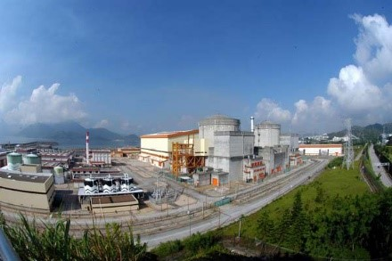
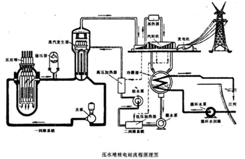

中核集团
2017年核科普开放周活动之第二届全国高校学生课外“核+X”创意大赛
核+动力
主页
概况
核能
核动力
核反应堆
概况
压水堆
基本构成——核能生成系统
主冷却剂系统——内能转换系统
二回路系统——动能输出系统
安全壳
核电站
概况
中国核电站
潜艇核动力装置
概况
中国核潜艇
水面船舰核动力装置
概况
中国核动力航母
空间核能装置
概况
空间核电源
空间核推进装置
发展和研究前景
中、小型核动力发展情况介绍
中、小核动力未来研究的方向
结论
核电站
核能发电作为一种新型的能源，发展迅速，到1991年底世界上已有28个国家和地区建成了422座核电站，发电容量约为3.27亿千瓦，正在建造中的76座；计划建造的还有100余座，加在一起共有600多座核电站。余部建成后装机容量可达5亿千瓦，发电量约占当时世界发电量的20％左右。
核电站是利用原子核裂变过程中释放的核能来发电的。对于不同类型的核反应堆，相应的核电站的系统和设备有较大差别。为了便于具体说明，本网站将以压水反应堆核电站为例，介绍核电站的系统、设备和工作原理。
压水堆核电站主要由核反应堆、一回路系统、二回路系统及其他辅助系统所组成。如图表示出压水堆核电站主要系统原理流程。
核反应堆是核电站动力装置的重要设备。同时，由于反应堆内进行的是裂变反应，因此它又是放射性的发源地。一座电功率为60—90万千瓦的核电站，反应堆本体总高约为15米，外径为4—5米，壳体总重约为250—350吨。它安装在核电站主厂房的反应堆大厅内，通过环向接管段与一回路的主管道相连。反应堆的全部重量由接管支座承受，即使发生大的地震，仍能保持其稳定的位置。核反应堆内装有一定数量的核燃料，核燃料裂变过程中放出的热能，由流经反应堆内的冷却剂带出反应堆，送往蒸汽发生器。